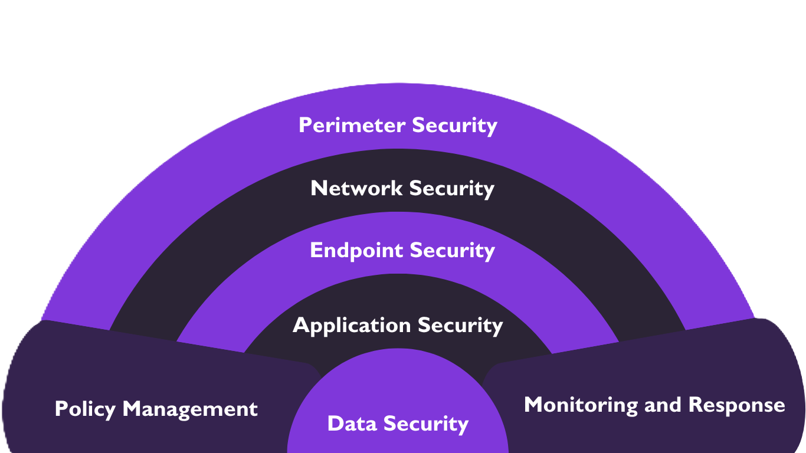

Defense-in-depth and Technical Cybersecurity

Defense in depth is a cybersecurity concept which means multiple layers of cybersecurity. It involves applying security protocols at multiple layers around an IT infrastructure. The objective of defense in depth is to ensure that if one of the protocol or measure fails, there are still other ones to compliment. A real-life analogy would be a castle. There would be a king sleeping in a room within the castle. To protect him, there is a secure room with guards on the door. The room would be within a building with strong brick-walls. The main door of the building will have locks and also guarded by guards. The building will be surrounded by fence and there will be guards in the entrance there too. There will also be watch gates and other security measures. Defense in depth has similar concept. It has different tools and techniques covering network, application, endpoint and even social aspects.
Attack Surface: The target in a cyber-attack is called attack surface. It is the things that are vulnerable to cyber-attack. For example, company website, employee portal, email accounts, passwords, etc. These are the possible vectors from which an adversary can extract information. The attack surface covers defense points like data, devices, applications, networks and systems. Attack surface is critical in cybersecurity because it identifies the possible points of cyber-attack in an organization.
Lifecycle of cyber attack
The process of malware infection follows four phases.
- Infection: The attacker injects malware into the computer system. This could be done via email attachments, Infected USB, hacking (accessing the computer system) and so on.
- Persistence: The infected malware will look to stay persistent. It will disable defenses. It replicates itself so that even if it is removed, it can re-install itself. It forms copies and spread throughout the system. When malware is installed in MBR (Master Boot Records), it re installs every time the operating system is booted, thus making it difficult to remove. It also achieves persistence by creating backdoor, which can help the adversary coordinate the malware.
- Communication: Communication is critical for malwares. A malware itself cannot perform all the tasks itself. It needs active instructions from the author. Communication is also necessary for the author to receive information from the infected computer.
- Control: Once the malware is in place and communicating, then the attacker can take control, updating it, controlling and coordinating the attack.
Methods of technical defense
- Anti-malware: It is the software that can protect a computer system against malwares. Malwares have signature which are its unique features like its file size, file type, extension, data usage pattern, methods of operation, etc. An anti-malware software can detect this pattern and recognize malware. Then, it moves the malicious file to a location where it cannot execute and is basically not functional at all. It then notifies the user and takes action.
- IDS (Intrusion Detection System): IDS detects any malicious activity in a system or network, and alerts. It doesn’t affect network performance.
- IPS (Intrusion Prevention System): It detects and also perform actions to prevent such malicious activity. It affects network performance as there will be delay in IPS processing.
- Firewall: Firewalls are located at the edge of a network. Its job is to filter incoming and outgoing network traffic. At early times, firewalls used to filter data packets. So, it could not protect against data spoofing. Firewalls can also include IDS and IPS. A firewall may be software or a hardware.
- Encryption and Cryptography: Cryptography is the process of translating information into secure format. It is the art of creating codes using encryption and decryption. Encryption is a part of cryptography. It is the process where information is hidden using certain algorithms.
- Proxy servers: Proxy servers are the middle-man between the computer and the internet. When a computer makes a request, the proxy sends the request to the internet, and when internet sends back response, the proxy sends it to the device. A proxy has security features as well. It hides the original IP address of the device masking with the proxy IP address. It also prevents direct access to the internet thus making it difficult for the attacker to gain access to the device.